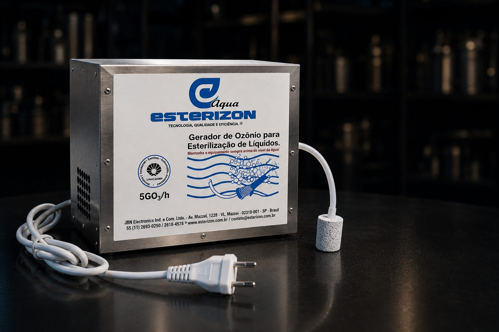

Esterizon Aqua
Gerador de ozônio pra esterilização de líquidos — purifica água e alimentos, elimina bactérias, vírus, fungos e resíduos de agrotóxicos.

Por que usar ozônio
5 motivos pra ter o Aqua no seu espaço
Elimina micro-organismos
Bactérias, vírus, fungos e parasitas — torna água e alimentos mais seguros pro consumo.
Prolonga a conservação
Reduz o desperdício e preserva sabor, textura e nutrientes por mais tempo.
Purifica com eficiência
Água livre de impurezas, cloro, metais pesados e odores.
Remove resíduos
Frutas, verduras e legumes mais limpos e seguros, livres de agrotóxicos.
Tecnologia certificada
Equipamento testado e certificado pela UNICAMP — confiança e qualidade comprovadas.
Como usar
Simples de encaixar na rotina
Água
Mergulhe a pedra difusora no recipiente com água e ligue o equipamento pelo tempo recomendado.
Alimentos
Coloque frutas, verduras ou legumes de molho e ligue o Aqua — o ozônio remove resíduos e prolonga a conservação.
Especificações
Ficha técnica
Água e alimentos mais seguros começam aqui
Fala com a gente e a gente te ajuda a colocar o Aqua pra funcionar no seu espaço.
Solicitar orçamento